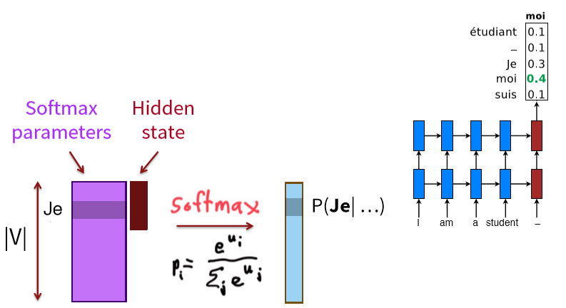
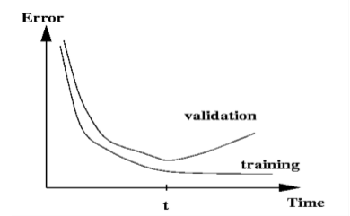
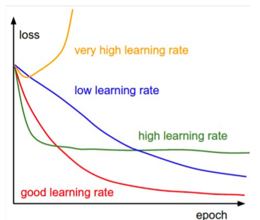

CS224n-2019 学习笔记¶
- 结合每课时的课件、笔记与推荐读物等整理而成
- 作业部分将单独整理
Lecture 09 Practical Tips for Final Projects¶
Lecture Plan
- Final project types and details; assessment revisited
- Finding research topics; a couple of examples
- Finding data
- Review of gated neural sequence models
- A couple of MT topics
- Doing your research
- Presenting your results and evaluation
This lecture is still relevant ... Even if doing DFP
-
At a lofty level
- 了解一些关于做研究的知识是有好处的
-
我们将接触到:
- 基线
- 基准
- 评估
- 错误分析
- 论文写作
这也是 默认最终项目 的一大特点
2. Finding Research Topics¶
所有科学的两个基本出发点
- [钉子]从一个(领域)感兴趣的问题开始，并试图找到比目前已知的/使用的更好的方法来解决它。
- [锤子]从一个感兴趣的技术方法开始，找出扩展或改进它或应用它的新方法的好方法
Project types
这不是一个详尽的列表，但大多数项目都是其中之一
- 找到感兴趣的应用程序/任务，探索如何有效地接近/解决它，通常应用现有的神经网络模型
- 实现了一个复杂的神经结构，并在一些数据上展示了它的性能
- 提出一种新的或变异的神经网络模型，并探讨其经验上的成功
- 分析项目。分析一个模型的行为：它如何表示语言知识，或者它能处理什么样的现象，或者它犯了什么样的错误
- 稀有的理论项目：显示模型类型、数据或数据表示的一些有趣的、重要的属性
How to find an interesting place to start?
- Look at ACL anthology for NLP papers
- Also look at the online proceedings of major ML conferences
- NeurIPS, ICML, ICLR •
- Look at past cs224n project
- See the class website
- Look at online preprint servers, especially
- Even better: look for an interesting problem in the world
- ArxivSanity Preserver by Stanford grad Andrej Karpathy of cs231n
- Great new site –a much needed resource for this – lots of NLP tasks • Not always correct, though
Finding a topic
“If you see a research area where many people are working, go somewhere else.”
Must-haves (for most* custom final projects)
- 合适的数据
- 通常目标:10000 +标记的例子里程碑
- 可行的任务
- 自动评估指标
- NLP是项目的核心
3. Finding data¶
- 有些人会为一个项目收集他们自己的数据
- 你可能有一个使用“无监督”数据的项目
- 你可以注释少量的数据
- 你可以找到一个网站，有效地提供注释，如喜欢，明星，评级等
- 有些人使用现有的研究项目或公司的数据
- 如果你可以提供提交、报告等数据样本
- 大多数人使用现有的，由以前的研究人员建立的数据集
- 你有一个快速的开始，有明显的前期工作和基线
linguistic data consortium
语言数据联盟
- https://catalog.ldc.upenn.edu/
- Stanford licenses data; you can get access by signing up at:
- Treebanks, named entities, coreference data,lots of newswire, lots of speech with transcription, parallel MT data
- Look at their catalog
- Don’t use for non Stanford purposes!
Machine translation
- http://statmt.org
- 特别要注意各种 WMT 共享任务
Dependency parsing: Universal Dependencies
https://universaldependencies.org
Many, many more
现在网上有很多其他的数据集可以用于各种各样的目的
- 看Kaggle
- 看研究论文
- 看数据集列表
4. One more look at gated recurrent units and MT¶

Backpropagation through Time
梯度消失问题十分严重
- 当梯度趋近于 0 时，我们无法判断
- 数据中det 和 t+n 之间不再存在依赖关系
- 参数设置错误（梯度消失条件）
- 这是原始转换函数的问题吗？
- 有了它，时间导数就会消失
Gated Recurrent Unit
- 这意味着错误必须通过所有中间节点反向传播

- 或许我们可以创建快捷连接

我们可以创建自适应的快捷连接
- 候选更新 \tilde{h}_{t}=\tanh \left(W\left[x_{t}\right]+U h_{t-1}+b\right)
- 更新门 u_{t}=\sigma\left(W_{u}\left[x_{t}\right]+U_{u} h_{t-1}+b_{u}\right)
- \odot 表示逐元素的乘法
让网络自适应地修剪不必要的连接

- 候选更新 \tilde{h}_{t}=\tanh \left(W\left[x_{t}\right]+U\left(r_{t} \odot h_{t-1}\right)+b\right)
- 重置门 r_{t}=\sigma\left(W_{r}\left[x_{t}\right]+U_{r} h_{t-1}+b_{r}\right)
- 更新门 u_{t}=\sigma\left(W_{u}\left[x_{t}\right]+U_{u} h_{t-1}+b_{u}\right)
将RNN单元想象为一个微型计算机
tanh-RNN

GRU

-
门控循环单位更现实
-
注意，在思想和注意力上有一些重叠
两个最广泛使用的门控循环单位：GRU和LSTM

The LSTM

- (绿色)LSTM门的所有操作都可以被遗忘/忽略，而不是把所有的东西都塞到其他所有东西上面
- (橙色)下一步的非线性更新就像一个RNN
- (紫色)这部分是核心（ResNets也是如此）不是乘，而是将非线性的东西和 c_{t-1} 相加得到 c_t 。c_t, c_{t-1}之间存在线性联络
5. The large output vocabulary problem in NMT (or all NLG)¶
Softmax 计算代价昂贵

The word generation problem
- 词汇生成问题
- 词汇量通常适中:50K

Possible approaches for output
- Hierarchical softmax : tree-structured vocabulary
- Noise-contrastive estimation : binary classification
- Train on a subset of the vocabulary at a time; test on a smart on the set of possible translations
- 每次在词汇表的子集上进行训练，测试时自适应的选择词汇表的子集
- Jean, Cho, Memisevic, Bengio. ACL2015
- Use attention to work out what you are translating
- You can do something simple like dictionary lookup
- 直接复制原句中的生词： “复制”模型
- More ideas we will get to : Word pieces; char. models
MT Evaluation –an example of eval
- 人工(最好的!?)
- Adequacy and Fluency 充分性和流畅性(5或7尺度)
- 错误分类
- 翻译排名比较（例如人工判断两个翻译哪一个更好）
- 在使用MT作为子组件的应用程序中进行测试
- 如问答从外语文件
- 无法测试翻译的很多方面(例如,跨语言IR)
- 如问答从外语文件
- 自动度量
- BLEU (双语评价替手)
- Others like TER, METEOR, ……
BLEU Evaluation Metric
- N-gram 精度(得分在0和1之间)
- 参考译文中机器译文的 N-gram 的百分比是多少?
- 一个n-gram是由n个单词组成的序列
- 在一定的n-gram水平上不允许两次匹配相同的参考译文部分(两个MT单词airport只有在两个参考单词airport时才正确；不能通过输入“the the the the the”来作弊)
- 也要用 unigrams 来计算单位的精度，等等
- 参考译文中机器译文的 N-gram 的百分比是多少?
- 简洁惩罚 BP
- 不能只输入一个单词“the”(精确度1.0!)
- 人们认为要“玩弄”这个系统是相当困难的。例如找到一种方法来改变机器的输出，使BLEU上升，但质量不会下降。
- BLEU是一个加权的几何平均值，加上一个简洁的惩罚因子
- 注意：只在语料库级起作用(0会杀死它)；句子级有一个平滑的变体
- 下图是 n-grams 1-4 的BLEU计算公式

Initial results showed that BLEU predicts human judgments well

Automatic evaluation of MT
- 人们开始优化系统最大化BLEU分数
- BLEU分数迅速提高
- BLEU和人类判断质量之间的关系一直下降
- MT BLEU分数接近人类翻译但是他们的真实质量仍然远低于人类翻译
- 想出自动MT评估已经成为自己的研究领域
- 有许多建议:TER, METEOR, MaxSim, SEPIA，我们自己的RTE-MT
- TERpA 是一个具有代表性的，好处理一些词的选择变化的度量
- MT研究需要一些自动的度量，以允许快速的开发和评估
6. Doing your research example: Straightforward Class Project: Apply NNets to Task¶
- 定义任务
- 示例：总结
- 定义数据集
- 搜索学术数据集
- 他们已经有基线
- 例如 Newsroom Summarization Dataset https://summari.es
- 定义你自己的数据(更难，需要新的基线)
- 允许连接到你的研究
- 新问题提供了新的机会
- 有创意:Twitter、博客、新闻等等。有许多整洁的网站为新任务提供了创造性的机会
- 搜索学术数据集
- 数据集卫生
- 开始的时候，分离devtest and test
- 接下来讨论更多
- 开始的时候，分离devtest and test
- 定义您的度量(s)
- 在线搜索此任务的已建立的度量
- 摘要: Rouge (Recall-Oriented Understudy for GistingEvaluation) ，它定义了人工摘要的 n-gram重叠
- 人工评价仍然更适合于摘要；你可以做一个小规模的人类计算
- 建立基线
- 首先实现最简单的模型(通常对unigrams、bigrams 或平均字向量进行逻辑回归)
- 在训练和开发中计算指标
- 如果度量令人惊讶且没有错误，那么
- 完成!问题太简单了。需要重启
- 实现现有的神经网络模型
- 在训练和开发中计算指标
- 分析输出和错误
- 这门课的最低标准
- 永远要接近您的数据（除了最后的测试集）
- 可视化数据集
- 收集汇总统计信息
- 查看错误
- 分析不同的超参数如何影响性能
- 通过良好的实验设置，尝试不同的模型和模型变体，达到快速迭代的目的
- Fixed window neural model
- Recurrent neural network
- Recursive neural network
- Convolutional neural network
- Attention-basedmodel
Pots of data
- 许多公开可用的数据集都是使用train/dev/test结构发布的。我们都在荣誉系统上，只在开发完成时才运行测试集
- 这样的分割假设有一个相当大的数据集
- 如果没有开发集或者您想要一个单独的调优集，那么您可以通过分割训练数据来创建一个调优集，尽管您必须权衡它的大小/有用性与训练集大小的减少
- 拥有一个固定的测试集，确保所有系统都使用相同的黄金数据进行评估。这通常是好的，但是如果测试集具有不寻常的属性，从而扭曲了任务的进度，那么就会出现问题。
Training models and pots of data
- 训练时,模型过拟合
- 该模型正确地描述了您所训练的特定数据中发生的情况，但是模式还不够通用，不适合应用于新数据
- 监控和避免问题过度拟合的方法是使用独立的验证和测试集…

- 您在一个训练集上构建(评价/训练)一个模型。
- 通常，然后在另一个独立的数据集上设置进一步的超参数，即调优集
- 调优集是用来调整超参数的训练集
- 在开发集(开发测试集或验证集)上度量进度
- 如果您经常这样做，就会过度适应开发集，所以最好有第二个开发集，即dev2set
- 只有最后,你评估和最终数据在一个测试集
- 非常少地使用最终测试集……理想情况下只使用一次
- 培训、调优、开发和测试集需要完全不同
- 在训练所使用的数据集上进行测试是无效的
- 您将得到一个错误的良好性能。我们通常训练时会过拟合
- 您需要一个独立的调优
- 如果调优与train相同，则无法正确设置超参数
- 如果你一直运行在相同的评价集，你开始在评价集上过拟合
- 实际上，你是在对评估集进行“训练”……你在学习那些对特定的评估集有用和没用的东西，并利用这些信息
- 要获得系统性能的有效度量，您需要另一个未经训练的独立测试集，即 dev2 和最终测试
我们需要意识到，每一次通过评估结果的变化而完成的调整，都是对数据集的拟合过程。我们需要对数据集的过拟合，但是不可以在独立测试集上过拟合，否则就失去了测试集的意义
Getting your neural network to train
- 从积极的态度开始
- 神经网络想要学习
- 如果网络没有学习，你就是在做一些事情来阻止它成功地学习
- 神经网络想要学习
- 认清残酷的现实
- 有很多事情会导致神经网络完全不学习或者学习不好
- 找到并修复它们(“调试和调优”)通常需要更多的时间，而不是实现您的模型
- 很难算出这些东西是什么
- 但是经验、实验和经验法则会有所帮助！
Models are sensitive to learning rates
From Andrej Karpathy, CS231n course notes

Models are sensitive to initialization
From Michael Nielsen http://neuralnetworksanddeeplearning.com/chap3.html

Training a (gated) RNN
- 使用LSTM或GRU：它使您的生活变得更加简单！
- 初始化递归矩阵为正交矩阵
- 用一个可感知的(小的)比例初始化其他矩阵
- 初始化忘记门偏差为1：默认记住
- 使用自适应学习速率算法：Adam, AdaDelta，…
- 梯度范数的裁剪：1-5似乎是一个合理的阈值，当与Adam 或 AdaDelta一起使用
- 要么只使用 dropout vertically，要么研究使用Bayesian dropout(Gal和gahramani -不在PyTorch中原生支持)
- 要有耐心！优化需要时间
Experimental strategy
- 增量地工作！
- 从一个非常简单的模型开始
- 让它开始工作一个接一个地添加修饰物，让模型使用它们中的每一个(或者放弃它们)
-
最初运行在少量数据上
- 你会更容易在一个小的数据集中看到bug
- 像8个例子这样的东西很好
- 通常合成数据对这很有用
- 确保你能得到100%的数据
- 否则你的模型肯定要么不够强大，要么是破碎的
-
在大型数据集中运行
- 模型优化后的训练数据仍应接近100%
- 否则，您可能想要考虑一种更强大的模式来过拟合训练数据
- 对训练数据的过拟合在进行深度学习时并不可怕
- 这些模型通常善于一般化，因为分布式表示共享统计强度，和对训练数据的过度拟合无关
- 模型优化后的训练数据仍应接近100%
- 但是，现在仍然需要良好的泛化性能
- 对模型进行正则化，直到它不与dev数据过拟合为止
- 像L2正则化这样的策略是有用的
- 但通常Dropout是成功的秘诀
- 对模型进行正则化，直到它不与dev数据过拟合为止
Details matter!
- 查看您的数据，收集汇总统计信息
- 查看您的模型的输出，进行错误分析
- 调优超参数对于神经网络几乎所有的成功都非常重要
Reference¶
以下是学习本课程时的可用参考书籍：
《基于深度学习的自然语言处理》 （车万翔老师等翻译）
以下是整理笔记的过程中参考的博客：
斯坦福CS224N深度学习自然语言处理2019冬学习笔记目录 (课件核心内容的提炼，并包含作者的见解与建议)
斯坦福大学 CS224n自然语言处理与深度学习笔记汇总 这是针对note部分的翻译